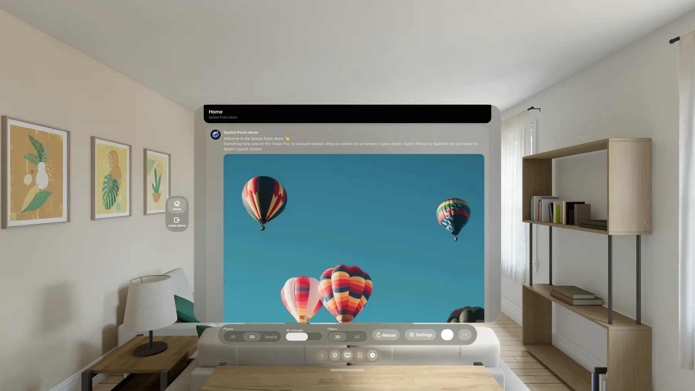

Photos in 3D and Spatial
Choose 2D, 3D relief or full Spatial. Upcoming photos are prepared ahead so scrolling stays smooth.
Spatial Posts
The posts you follow, in a glass window you can place anywhere around you. Photos gain depth as you scroll, videos play in a private cinema, and long threads open in a calm reading window.
Stop on a photo and it comes alive in 3D. Start a video and the room dims around a giant screen.
Features
Choose 2D, 3D relief or full Spatial. Upcoming photos are prepared ahead so scrolling stays smooth.
Press the TV button and watch on a giant screen while the room dims around you.
Long threads open beside your timeline in a calm, serif layout with adjustable text size.
Report or block from the shield button, reports reviewed within 24 hours. Your password never reaches the app. For adults, 18+.
